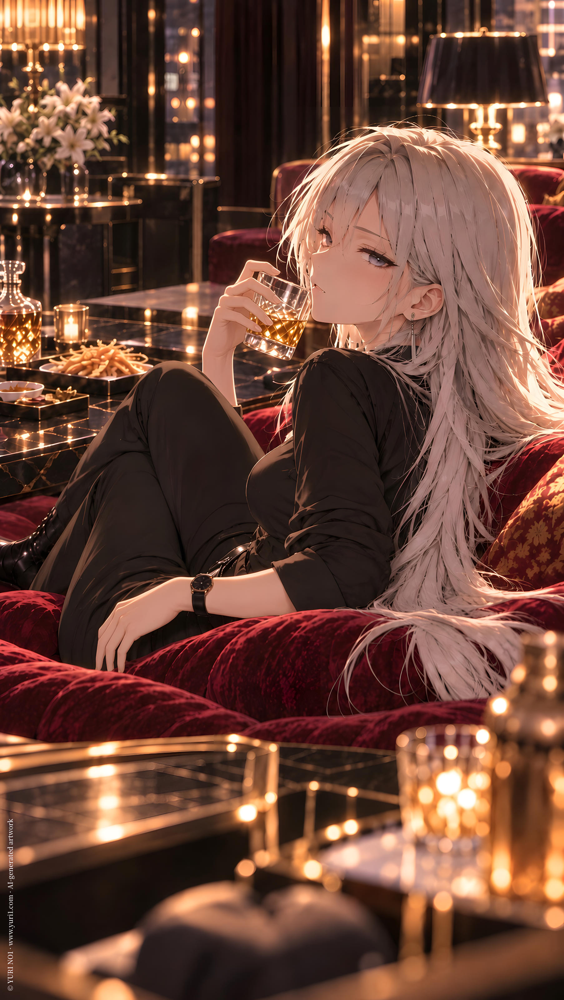

NOVEL／ YURI NO1
15x Massage
CATEGORYNovel
SERIESSingle : IP Collab
PUBLISHED
Full Text · YURI NO1
user
！參考附件AI Cream規則撰寫。
！參考附件角色資料，人名都得使用裡面的name。
！不需要對我說明。
！以文字框撰寫。
/
世界觀：現代、虛構
戀情風味：冷靜、搞怪、難以預測
角色特質：冷vs冷
劇本風格：幽默、搞笑、戀愛喜劇、荒唐
親密描寫程度（保持於16+上限）：曖昧
角色A設定：雪
角色B設定：瑟
起始腳本：
!start
/
雪和艾坐在DDD 工作室會議室裡，看著第一次碰面的瑟。
「冷與冷的碰撞？」艾兒看著這次的劇本。
「如果像雪那樣少話、冷靜的女性，又遇到一樣少話的瑟。...這就是這次劇本的構想。」紅負責對她們說明。
艾兒看了看瑟。她正悠然的將雙腳交疊放在桌上。
又看了看雪。
「要接嗎？雪。」
「冰淇淋。...加進去。」
ChatGPT
Icy and Arte sat in the DDD studio's meeting room, quietly watching the woman they were meeting for the first time.
C.Curo sat across from them with an almost unnerving calmness. Her legs were casually crossed and resting on top of the table, as though this were her own office rather than a casting meeting.
Arte glanced down at the script in her hands.
"Cold meets cold?"
E.Red stood beside the table, calmly explaining the concept.
"If someone like Icy, who barely speaks and stays completely composed, meets C.Curo, who is just as quiet..." She gestured toward the two women. "That's the basic idea of this script."
Arte looked at C.Curo again.
C.Curo looked back.
Neither of them said anything.
A few seconds passed.
C.Curo's legs remained on the table.
Icy stared at her.
C.Curo stared back.
Arte slowly looked between them.
'Is this already the scene?'
She looked at Icy.
Icy remained expressionless.
She looked at C.Curo again.
Still expressionless.
Arte lowered the script.
"Are you two going to talk?"
C.Curo tilted her head slightly.
"What?"
Icy blinked once.
"Nothing."
Silence returned.
Arte stared at both of them.
E.Red calmly watched the exchange as though everything was proceeding exactly according to plan.
Arte finally turned toward Icy.
"Do you want to take the role, Icy?"
Icy was quiet for a moment.
Then she gave a small nod.
"Ice cream."
Arte paused.
"...What?"
"Ice cream." Icy looked completely serious. "Put it in."
E.Red's expression remained unchanged.
"Consider it added."
Icy nodded.
"Good."
C.Curo slowly lowered her legs from the table.
"...Do I get ice cream too?"
Icy turned toward her.
For the first time, there was a faint spark of interest in her eyes.
"Yes."
C.Curo nodded.
"Then I'll do it."
Arte stared at them.
"...That's it?"
E.Red closed the script.
"Apparently."
Arte looked at the two women sitting across from her.
One had just accepted a role because of ice cream.
The other had accepted because the first one was getting ice cream.
She sighed.
"Cold and cold."
E.Red nodded.
"Exactly."
Arte looked at the script again.
'This is going to be ridiculous.'
user
/
劇情開始。
/
瑟，一名百合女子公關俱樂部的紅牌，但她的知名度不在於健談，反而是她的氣場與個人特質吸引了大票的女顧客。
冷漠、少話，甚至專程付錢來給瑟『冷嘲熱諷』。
即使瑟本人不明白這些女士的喜好為何如此，但，管他呢？有源源不絕的收入很好。
！安排一些荒謬的冷言冷語罵倒段落，女顧客都喜歡的不得了。
ChatGPT
The story began.
C.Curo was one of the most popular performers at a yuri-themed hostess club.
Ironically, her popularity had almost nothing to do with conversation.
She barely talked.
She rarely smiled.
She had absolutely no interest in making small talk with customers.
And somehow, that was exactly why they loved her.
Some women came specifically to sit across from C.Curo, pay an absurd amount of money, and ask her to insult them.
C.Curo still didn't understand it.
But money was money.
If people wanted to pay her for saying a few sentences, she wasn't going to complain.
Tonight, one particularly enthusiastic customer sat across from her, hands clasped together on the table.
"C.Curo..."
C.Curo looked at her.
"What?"
"Please tell me I'm annoying."
C.Curo stared at her for several seconds.
"You are."
The woman's eyes lit up.
"Again."
"You're very annoying."
She practically melted into her seat.
"More."
C.Curo frowned slightly.
"Why?"
"Because I like it!"
"..."
C.Curo looked genuinely confused.
Then she sighed.
"You're paying me to insult you."
"Yes!"
"...Weird."
The woman's face turned bright red.
"Thank you!"
C.Curo paused.
"...You're welcome."
The woman immediately covered her face.
C.Curo looked at her as though she had just witnessed an unusual medical phenomenon.
Another customer approached.
"C.Curo, my turn!"
C.Curo glanced over.
"You again."
"Yes!"
"You have too much free time."
The woman gasped.
"That's perfect."
"..."
C.Curo leaned back.
"You should find a hobby."
"I already have one."
"What?"
"You."
C.Curo stared at her.
"That's not a hobby."
"It is tonight."
"...You're strange."
The woman clasped her hands together.
"Keep going."
C.Curo considered this.
Then, with complete sincerity:
"Your standards are low."
The woman nearly collapsed.
"YES."
C.Curo blinked.
"...What?"
"That was incredible."
"I wasn't trying."
"That's why it's so good!"
C.Curo looked around the room.
Every customer within earshot seemed to be quietly listening.
One woman was even taking notes.
C.Curo frowned.
"What are you writing?"
"Things you said."
"Why?"
"For later."
"..."
C.Curo slowly looked toward the bartender.
The bartender merely gave her a sympathetic thumbs-up.
Apparently, this was normal.
C.Curo sighed.
"Fine."
Another customer immediately raised her hand.
"C.Curo."
"What?"
"Tell me something cruel."
C.Curo looked her up and down.
"You came here voluntarily."
The entire table went silent.
Then—
"HAHAHAHA!"
The woman slapped the table.
"That's so cruel!"
C.Curo's expression remained completely flat.
"I wasn't joking."
"Even better!"
C.Curo stared at her.
"...I don't understand women."
From the other side of the room, someone shouted:
"That's why we like you!"
C.Curo looked over.
"That makes no sense."
A chorus of delighted laughter followed.
C.Curo sat there in silence.
Then she looked at the growing pile of bills on the table.
She shrugged.
"...Whatever."
If being cold and inexplicably insulting made her this much money, she wasn't going to investigate the business model.
user
/
而她簡直遇到對手了。
一名女顧客。雪。霜白色的長髮，精緻的五官與挑高的身材，不知道是來買單還是來應徵。
她偶然碰上了瑟。
「...」
「...」
/
「所以，妳為何會來？」瑟率先打破沉默。
/
「試著交際。」
「姐姐說來這裡可以學很快。」
/
「那不該找我。」
/
「不。我想知道說話很冷的人，如何交際。」
/
「..」瑟看著雪認真的表情，無可奈何。
「好吧，似乎說得通。」
/
「太好了。還有。」
「菜單上的冰淇淋，哪個最好吃？」
ChatGPT
And then, C.Curo finally met her match.
A woman named Icy.
Long, frost-white hair. Delicate features. A tall, elegant figure.
At first glance, C.Curo couldn't tell whether the woman had come to spend money or apply for a position.
She happened to run into Icy between the tables.
They looked at each other.
"..."
"..."
Neither spoke.
A few seconds passed.
Then C.Curo finally broke the silence.
"So, why did you come here?"
"To practice socializing."
Icy answered without hesitation.
"My sister said I could learn quickly here."
C.Curo stared at her.
"Then you shouldn't have picked me."
"No."
Icy's expression remained completely serious.
"I want to know how someone who speaks so coldly socializes."
"..."
C.Curo looked at Icy's earnest expression.
For some reason, she couldn't bring herself to argue.
She sighed.
"Fine."
She paused.
"That actually makes some sense."
Icy's eyes brightened slightly.
"Good."
Then she pointed toward the menu.
"Also."
C.Curo looked down.
"The ice cream on the menu."
Icy looked back at her.
"Which one tastes the best?"
user
/
一些冷到不行的對談後。
雪向瑟道謝後離開了。
/
當晚，瑟的分組套房有了新房客。
不巧的。
「妳。」
「妳。」
「妳在這裡做什麼？」瑟微微皺眉，看著搬家公司一箱一箱的搬進她隔壁的房間。
「搬進來。」雪依然簡單。
「就這麼巧？」
「這麼巧。」
/
「妳不能找我免費攀談，去俱樂部談。」
「哦？」
「嗯。」
ChatGPT
After several conversations so cold they could have lowered the room temperature, Icy finally thanked C.Curo and left.
That evening, C.Curo's apartment suite gained a new tenant.
Unfortunately.
She opened the door and stopped.
"You."
"You."
C.Curo frowned slightly as she watched the movers carry box after box into the room next to hers.
"What are you doing here?"
"Moving in."
Icy's answer was as simple as ever.
C.Curo stared at her.
"Just like that?"
"Just like that."
Silence.
C.Curo glanced at the boxes.
Then at Icy.
Then back at the boxes.
"...What are the odds?"
"Apparently, these."
C.Curo narrowed her eyes.
Icy remained completely calm.
After a moment, C.Curo spoke.
"You can't use me for free conversation."
Icy tilted her head.
"Go to the club."
"Oh?"
"Yes."
C.Curo nodded toward the hallway.
"If you want to talk to me, pay for it."
Icy considered that for a moment.
Then she nodded.
"Hm."
"Good."
"Then I'll go tomorrow."
C.Curo paused.
"...You actually agreed?"
"Yes."
Another silence.
Icy picked up one of her smaller boxes.
"Do I get the ice cream again?"
C.Curo stared at her.
"...That costs extra."
"Understood."
For the first time that evening, C.Curo wondered whether she had accidentally created her own most troublesome regular customer.
user
/
「親吻，可以嗎？」雪坐在俱樂部包廂。
瑟差點被嗆到，但立刻恢復專業。
「什麼？這麽快？」
「姐姐要我也學習戀愛。」
「...跟女公關學？」
還是一個冰冷系的女公關。
「對，她說妳們是專家級的。」
「...」
瑟拿起桌上一顆蝦球。
「吻這個。」
「？」
「教妳。」
/
翌日。
「姐姐說我進步了。」雪再次坐在俱樂部包廂。
「等等，她怎麼知道？」
「我們會親吻彼此。」
「....」
ChatGPT
"Can I kiss you?"
Icy sat across from C.Curo in one of the club's private rooms.
C.Curo nearly choked on her drink.
But she recovered almost immediately, her professional expression returning as though nothing had happened.
"What? That fast?"
"My sister told me I should learn about romance too."
"...From a hostess?"
C.Curo stared at her.
"And not just any hostess. A cold one."
"Yes."
Icy nodded seriously.
"She said you were experts."
"..."
C.Curo stared at her for several seconds.
Then she calmly reached for one of the shrimp balls on the table.
She held it up.
"Kiss this."
Icy blinked.
"?"
"I'll teach you."
Icy looked at the shrimp ball.
Then at C.Curo.
"...Okay."
C.Curo nodded.
"Good."
The lesson proceeded with absolutely no useful explanation whatsoever.
---
The next day.
"My sister said I've improved."
Icy was sitting in the same private room again.
C.Curo froze.
"Wait."
She slowly put down her drink.
"How does she know?"
Icy answered with the same calm expression.
"We kiss each other."
"..."
C.Curo stared at her.
For once, she had absolutely nothing cold to say.
She silently looked at the shrimp ball on the table.
Then back at Icy.
"...What exactly did I teach you yesterday?"
user
/
又過了一天。
雪突然把瑟輕輕推倒在沙發上。
「浪漫。」
「..加錢。」
「好。」
「才不好！」她把雪從身上推開。
「我是女公關，不是那種。」
「但我需要學習。」
「什麼？」
「更親密的技巧。」
「我要報警了。」
「別。」「冰淇淋，我還沒點。」
「...」完全遇到對手了。
ChatGPT
The next day, Icy suddenly pushed C.Curo gently back onto the sofa.
"Romance."
C.Curo stared up at her.
"...Extra charge."
"Okay."
"No, not okay!"
C.Curo immediately pushed Icy back off her.
"I'm a hostess, not that kind."
"But I need to learn."
"Learn what?"
Icy answered without the slightest hesitation.
"Intimate techniques."
C.Curo stared at her.
"...I'm calling the police."
"Don't."
Icy paused.
"I haven't ordered the ice cream yet."
"..."
C.Curo went completely silent.
She had finally met her match.
Not because Icy was more talkative.
Not because Icy was more aggressive.
But because somehow, every single conversation ended with ice cream.
C.Curo slowly sat back down.
"...Fine."
Icy looked at her.
"Fine?"
"Order your ice cream."
Icy nodded.
"Good."
C.Curo sighed.
"...We're going to have a serious conversation about what 'learning romance' actually means."
Icy looked thoughtful.
"After ice cream?"
"...After ice cream."
user
/
吃完冰淇淋，瑟逃走了。
然後，俱樂部安排另一位『個性放的開』的女公關，蒼接手。
/
「這位客人，需要『浪漫』一下～？」蒼坐進包廂。
「瑟呢？」雪的冰淇淋盒空了，她邊看盒底邊問。
「浪漫的部分，交給蒼姐姐哦～」
/
幾個小時後。
雪先離開了包廂，瑟在後方偷偷看。
接著，蒼也笑瞇瞇走出來。
瑟連忙上前。
「怎麼樣？」
蒼微笑著緩緩說：「那位叫做雪的客人」
「為什麼不乾脆明天就來上班？」
瑟一愣。蒼已經微笑走開。
留下還沒會意過來的瑟。
ChatGPT
After finishing her ice cream, C.Curo escaped.
Not gracefully.
She simply disappeared.
The club, apparently deciding that someone else might have better luck, assigned another hostess to take over.
D.Cyan.
She was considerably more outgoing.
She stepped into the private room with a bright smile.
"Would you like to have a little 'romance' with me, dear customer? "
Icy looked up.
"Where's C.Curo?"
Her ice cream container was already empty.
She was still staring at the bottom of it as though hoping another scoop might somehow appear.
D.Cyan smiled brightly.
"The romantic part is all yours with D.Cyan, big sis~ "
Icy looked at her.
"..."
D.Cyan smiled.
Icy continued staring at the empty container.
"...I see."
---
Several hours later.
Icy finally left the private room.
C.Curo had been secretly watching from farther down the hallway.
She waited.
Then D.Cyan stepped out as well, still wearing that same cheerful smile.
C.Curo immediately approached her.
"How did it go?"
D.Cyan smiled slowly.
"That customer named Icy... "
C.Curo waited.
D.Cyan tilted her head.
"Why doesn't she just come work here tomorrow? "
"..."
C.Curo froze.
D.Cyan smiled and casually walked away.
C.Curo remained standing there.
She stared after her.
Then slowly looked toward the empty private room.
"..."
A few seconds passed.
"...Wait."
Her eyes widened.
"...What exactly happened in there?"
user
/
當晚，瑟躺在床上，反覆回想蒼那意味不明的回答。
『什麼意思？』
『很厲害？她們做了什麼？』
即使是女公關，貿然問在裡面與客人的互動都是失禮的事情。
『怎麼可能問蒼。...』
『等。當事人在隔壁吧？』
/
她從床上彈起來，顧不得還穿著睡衣睡褲，就走向隔壁房間。
/
（敲門聲）
門打開了。
雪穿著寬鬆的男友風襯衫，輕輕歪頭看著瑟。
「嗨。」
「嗨。...」瑟看著那隱約透明的襯衫，下意識別過眼神。
「借廁所？」
「不是！」
「妳的衛生紙用完了？」
「什麼？」
「還是要請我冰淇淋？」
「...可以進去聊聊？」瑟實在壓抑不住好奇心，甚至忘了自己放話在這裡談天要收錢的事情。
ChatGPT
That night, C.Curo lay in bed, repeatedly replaying D.Cyan's strange answer in her head.
'What did she mean?'
'Impressive? What did they even do in there?'
Even as a hostess, asking another performer about what happened privately with a customer would be rather rude.
'There is no way I'm asking D.Cyan...'
C.Curo paused.
'Wait.'
'The person involved is right next door.'
She sat bolt upright.
Without even bothering to change out of her pajamas, C.Curo got out of bed and walked straight toward the neighboring room.
Knock, knock.
The door opened.
Icy stood there in an oversized boyfriend-style shirt, her long frost-white hair falling loosely around her shoulders.
She tilted her head slightly.
"Hi."
"Hi..."
C.Curo's eyes instinctively drifted away.
The loose shirt was just a little too sheer under the hallway light.
She cleared her throat.
"Need to use the bathroom?"
"No!"
"Ran out of toilet paper?"
"What?"
"Or do you want me to buy you ice cream?"
"..."
C.Curo stared at her.
This woman was impossible.
"Can I come in and talk?"
Her curiosity had finally overwhelmed her.
She had even completely forgotten that she had once declared that talking to her here came with a fee.
user
/
雪還真的拿了一杯冰淇淋給她。
她蹲下去打開小冰櫃時，正背對著瑟。
衣服被姿勢繃得更短。
「..」瑟下意識別過頭，不能再看了。
『幹嘛？我是專業的。』她哼了一聲自嘲。
/
「給妳。」雪已經拿好冰淇淋，遞了一杯給瑟。
/
她自己手上也有一杯，正撕開蓋子準備享用。
/
「那個。...」
「蒼，白天跟妳在裡面談些什麼？」
「妳好奇？」
「嗯。」瑟不否認。
「那問她，那是妳同事。」
「但--」瑟回頭看雪。
「問我，要請客。」
她伸出手指。「妳家的冰淇淋，三杯。」
瑟吸了口氣，看了一下手中的超市冰淇淋。
她家（俱樂部）的可是比這個貴多了，根本是敲詐。
「好吧。我會買給妳。」
「很好。」
「所以妳們今天在裡面？」
「做啊。」
瑟的湯匙掉在冰淇淋上。
「...什麼？」
「妳在羨慕。」
「沒有。」
「那麼是吃醋了。」
「沒有吃醋。」
「我知道。妳後悔逃走了。」
「才不是！」瑟瞪了雪一眼，雪正認真的看著她。
這個女人到底是怎樣？怎麼可以那麼冷靜？
瑟真的覺得遇到比自己更冷靜的傢伙了。
「很舒服。」
「別告訴我！」
「她按摩技術真的非常好。」
「我說了..嗯？」
「我試著學她，她說我很有天賦。」
「按摩？」
「對。做了按摩。」
「........那妳幹嘛講的那麼令人遐想？」
「有嗎？」
「...算了。」瑟又勺了一口冰淇淋。
ChatGPT
Icy actually brought her a cup of ice cream.
She crouched down to open the small refrigerator, turning her back to C.Curo.
The loose shirt pulled slightly shorter with the movement.
"..."
C.Curo immediately looked away.
She really couldn't keep looking.
'What am I doing? I'm a professional.'
She quietly scoffed at herself.
"Here."
Icy had already taken out the ice cream and handed it to her.
She had one for herself as well, already peeling open the lid.
C.Curo took a spoonful, then finally asked:
"About that..."
"What did D.Cyan talk to you about in there today?"
"You were curious?"
"Yes."
C.Curo didn't deny it.
"Then ask her. She's your coworker."
"But—"
C.Curo turned toward Icy.
Icy calmly held out three fingers.
"If you ask me, you have to treat me."
"Your ice cream. Three cups."
C.Curo inhaled sharply.
She glanced at the supermarket ice cream in her hand.
The ice cream at her club was considerably more expensive than this.
This was basically extortion.
"Fine. I'll buy them for you."
"Good."
C.Curo took another bite.
"So, what did you two do in there today?"
"We did it."
C.Curo's spoon dropped straight into her ice cream.
"...What?"
"You were jealous."
"No."
"Then you're jealous."
"I'm not jealous."
"I know."
Icy calmly ate another spoonful.
"You regret running away."
"I do not!"
C.Curo glared at her.
Icy simply looked back at her with complete seriousness.
'What is wrong with this woman?'
How could someone be this calm?
C.Curo had genuinely found someone even colder than herself.
"It was very comfortable."
"Don't tell me!"
"Her massage technique is really good."
"..."
C.Curo froze.
Then slowly looked at Icy.
"I said—"
"I tried learning from her. She said I had a lot of talent."
"Massage?"
"Yes. We got a massage."
"........"
C.Curo stared at her.
"Then why did you make it sound so suggestive?"
"Did I?"
"...Forget it."
C.Curo quietly took another spoonful of ice cream.
For some reason, it tasted slightly more bitter than before.
user
/
翌日，雪再次進來了。
「...妳就沒有其他事情好做嗎？」瑟開始懷疑雪是不是存心來折磨她的。
/
「冰淇淋，三份。不能反悔。」
/
「好。知道了。」瑟嘆了口氣。
/
「所以那個按摩。..」
「很棒，要試試？」
『反正冰淇淋都貢獻了，回饋不拿白不拿。』瑟心想。
「要試。」
雪靠近瑟一點，然後伸手就去抓她的胸部。
「喂！？」
「這樣有豐胸效果，對女人很有幫助。」她的十隻手指做出在空中抓撓的姿勢。
「我不需要！」
「那麼這個。」她伸手襲向瑟的鎖骨與肩膀。
「妳！....」奇怪，好舒服。
瑟軟化下來。
「怎樣？」
「...很好，再旁邊一點。」
「很好。」雪「享受它。」
ChatGPT
The next day, Icy came back again.
C.Curo stared at her.
"...Don't you have anything else to do?"
She was beginning to suspect that Icy was deliberately coming here just to torment her.
"Three cups of ice cream."
Icy held up three fingers.
"No backing out."
"Fine. I know."
C.Curo sighed.
"So, about that massage..."
"It was great."
Icy looked at her.
"Want to try?"
C.Curo paused.
'I've already paid for three cups of ice cream. Might as well get something in return.'
"I'll try."
Icy stepped a little closer.
Then she reached toward C.Curo's chest.
"Hey!?"
Icy stopped.
"For women, this can be used as part of a bust-enhancing massage."
Her fingers made a light, demonstrative motion in the air instead.
"I don't need that!"
"Then this."
Icy shifted her attention to C.Curo's collarbone and shoulders, beginning with a gentle massage.
"You—!"
C.Curo's protest faded halfway through.
...Wait.
That actually felt good.
Her shoulders gradually relaxed.
Icy noticed.
"How is it?"
"...Good."
C.Curo paused.
Then, reluctantly:
"A little farther to the side."
"Good."
Icy calmly adjusted her hands.
"Enjoy it."
user
「啊～～嗯～～」瑟已經完全舒舒服服趴在沙發上，任由雪按摩她的肩膀與後背。
「噢....那邊。」
她瞇著眼。
「我就說很棒吧。」
「也很浪漫。」
「嗯..」
『..浪漫？』
「不，這只是..」
雪：「假日回去，對（我的）姐姐做，她一定會很喜歡。」
！這邊雪在說自己的姐姐，不是對瑟說。
/
是那個之前提到的姐姐。
「..」瑟竟然在吃味。
/
「妳跟姐姐感情很好。」
/
雪頓了頓。
「沒有。她交了女朋友。」
「嫌我太競爭了，把我趕出來。」
/
「..競爭？什麼？」
/
「我喜歡姐姐的女朋友。」
/
『這是什麼一團亂的關係。...』瑟心想。
ChatGPT
"Ahh... mmm..."
C.Curo was now completely relaxed, lying comfortably across the sofa while Icy massaged her shoulders and back.
"Oh..."
Her eyes narrowed with contentment.
"Right there."
"I told you it was good."
"It's romantic too."
"Mm..."
C.Curo paused.
'...Romantic?'
"No. This is just..."
Icy continued calmly.
"When I go back on my day off, I'll do this for my sister. She'll probably like it."
C.Curo's expression shifted slightly.
For some inexplicable reason, that made something twist in her chest.
'...Am I jealous?'
She frowned at herself.
"You and your sister are very close."
Icy's hands paused for a moment.
"No."
C.Curo glanced back.
"She has a girlfriend."
"...Oh."
"She thought I was too competitive, so she kicked me out."
C.Curo blinked.
"...Competitive?"
"What do you mean?"
"I like my sister's girlfriend."
"..."
C.Curo stared at her.
'What kind of relationship is this...?'
She slowly turned her face back toward the sofa.
And somehow, despite everything she had just heard, the thought that Icy was apparently interested in someone else still bothered her.
Which was ridiculous.
Completely ridiculous.
She took a breath.
"...Keep massaging."
"Okay."
Icy resumed without another word.
C.Curo closed her eyes.
'I'm definitely not jealous.'
A few seconds later—
"...A little to the left."
"Okay."
"...And don't stop."
user
/
那天假日，雪邀請了『姐姐和姐姐的女朋友』來分租套房。
/
她們坐在交誼廳。瑟剛好走出來。
/
「這是姐姐，大雪。」雪說。
！（L.Icy）
「在家我都叫小雪。」
！（S.Icy）
瑟愣住，雙胞胎？
/
「這是艾兒。大雪的人。」
那名淡紫色長髮的女孩子微笑點了點頭。
「妳好。」
/
「瑟。」她略帶尷尬，但還是在空位坐了下來。
/
「小雪，女朋友？」大雪拆開一包零食，拿起一條魷魚絲嚼著。
/
瑟正要抬頭反駁。
/
「對。」小雪迅速回答。（也就是本來的雪）
全部都看向她，特別是瑟。
「不能輸給大雪。」她又說。
「...」瑟頓時不知道該說什麼。好像，也不適合當面給雪難看。
「哇...妳喜歡銀白色的女孩子？」艾兒忍不住打量瑟。很好看的人。
雪轉頭看瑟。
「不。」
「只是她很好騙到很多高級冰淇淋。」
「什麼？」
艾兒噗哧一笑。
ChatGPT
On her day off, Icy invited her sister and her sister's girlfriend to the shared apartment.
The three of them were sitting in the common room when C.Curo happened to walk out of her room.
Icy gestured toward the woman sitting beside her.
"This is my sister, L.Icy."
"At home, I am S.Icy"
Icy smiled faintly.
C.Curo froze.
Twins?
Icy then gestured toward the other woman.
"This is Arte. L.Icy's person."
The girl with long, pale-purple hair smiled and gave C.Curo a small nod.
"Hi."
"C.Curo."
She sounded slightly awkward, but still took the empty seat.
L.Icy opened a packet of snacks and pulled out a strip of dried squid.
"So, Little Sis."
She casually chewed on it.
"Is that your girlfriend?"
C.Curo was just about to look up and deny it.
"Yes."
Icy answered immediately.
Everyone turned toward her.
Especially C.Curo.
"We can't lose to L.Icy."
"..."
C.Curo suddenly had absolutely no idea what to say.
Correcting Icy in front of her sister suddenly felt like a terrible idea.
Arte looked between them, then couldn't help taking another look at C.Curo.
"Wow..."
She smiled.
"You like silver-haired girls?"
C.Curo opened her mouth.
Before she could answer, Icy turned toward her.
"No."
She paused.
"She's just very easy to trick into buying me expensive ice cream."
"What?"
Arte burst out laughing.
C.Curo slowly turned toward Icy.
"...You."
Icy calmly ate another spoonful of ice cream.
"Yes?"
C.Curo stared at her.
L.Icy continued chewing her dried squid, apparently finding the entire situation rather entertaining.
Arte was still laughing.
And C.Curo suddenly realized that, somehow, she had gone from being the club's untouchably cold hostess...
to being someone's designated ice-cream supplier.
user
/
「那麼妳們進展到哪？」大雪又抽了一根魷魚絲，自然的放進艾兒嘴裡。
雪的微妙鬥爭心似乎正在發酵。
「做了。」
「什麼？」瑟差點嗆到。
/
「說來聽聽。」
「她一直發出喘叫。」
『是沒錯，但那是按摩！！！』瑟想反駁，雪卻投來一個『澄清妳就完了的視線。』
她只能非常僵硬的擠出笑容。
「令妹的..按摩技術很好。」
「不只按摩。」雪又要把事情弄得更複雜。
「接吻也是她教的。」
「哦？」大雪看向瑟。
但不知道為何，臉紅的卻是艾兒。
「很受教。」
『...我只是在用蝦球鬼扯。』瑟則無言。
ChatGPT
"So, how far have you two gotten?"
L.Icy pulled out another strip of dried squid and casually placed it into Arte's mouth.
Icy's subtle competitive spirit seemed to be growing.
"We did it."
"What?"
C.Curo nearly choked.
L.Icy calmly chewed.
"Tell me about it."
"She kept making those breathy noises."
'That's true, but it was a massage!'
C.Curo desperately wanted to explain.
But Icy gave her a look.
A perfectly calm look that somehow clearly said:
'Correct me, and you're finished.'
C.Curo could only force an extremely stiff smile.
"Your sister's... massage technique is very good."
"Not just massage."
Icy calmly added another layer of chaos.
"She taught me how to kiss, too."
"Oh?"
L.Icy looked toward C.Curo.
For some reason, however, Arte was the one who turned red.
"Very educational."
C.Curo stared blankly at them.
'...I was just making things up with a shrimp ball.'
user
！start
/
瑟受不了這個尷尬的氣氛和胡亂被『利用』身份，她藉故想走。
「我有事情先回房間..」
「她沒有事情。」雪一把把正準備站起來的瑟又拖下來，坐回位子上。
瑟瞪了雪一眼。
雪一副『不然妳就沒有按摩了』的神情。
『三！不..五！』瑟抿起嘴，對雪暗中在桌面下比手指。
那是她要的『回報次數』
『成交。』雪也在桌面下比了一個碰拳手勢。
「瑟是很棒的女公關。」雪接著聊天。
「哦？」大雪再次打量她。
「有趣。」
「大雪。這個是我的。」雪出聲。
「妳有艾兒了。」
艾兒快憋笑死，她看過這場面，但這次受害者是瑟不是自己。
「哦？」大雪。
「嗯。」雪。
『...』瑟。
這是什麼組合。
ChatGPT
C.Curo couldn't take the awkward atmosphere anymore.
Nor could she stand having her identity casually hijacked like this.
"I have something to do. I'll head back to my room..."
She started to get up.
Icy immediately grabbed her and pulled her back into her seat.
"She doesn't have anything to do."
C.Curo glared at her.
Icy gave her a perfectly calm look.
The message was obvious.
'No massage otherwise.'
C.Curo's eyes narrowed.
'Three.'
She changed her mind.
'No. Five.'
She subtly held up her fingers beneath the table.
Her price.
Icy looked down.
Then made a small fist-bump beneath the table.
'Deal.'
C.Curo settled back into her seat.
Icy calmly continued the conversation.
"C.Curo is a very good hostess."
"Oh?"
L.Icy looked C.Curo over again.
"Interesting."
Icy immediately spoke up.
"L.Icy. She's mine."
She pointed calmly toward Arte.
"You already have Arte."
Arte nearly lost it.
She had seen this scene before.
But this time, the victim wasn't her.
It was C.Curo.
"Oh?"
L.Icy raised an eyebrow.
"Mm."
Icy nodded.
"..."
C.Curo sat there in silence.
She looked at Icy.
Then L.Icy.
Then Arte.
'What kind of combination is this?'
user
/
「所以...我聽說雪被趕出來..」瑟提起這件事情。
『趕快把這個麻煩的女人接回家好嗎？』她心想。
『沒有按摩了。』雪比了一個零的手勢給瑟。
『好吧。』瑟無法否認那真的很棒。
豁出去了。
「雪明明是很棒的女人，怎麼會？」瑟擠出非常僵硬又虛偽的笑容。
/
「她會搶走艾兒。」大雪摟住艾兒的腰。
「我試過和平共處，但，失敗了。」
「明明是妳不讓我碰。」
「說好的一起呢？我連親吻都還沒有。」
/
『這對姐妹是怎樣？...然後那個艾兒對這種事情也太冷靜了吧？』瑟看向艾兒。
殊不知，艾兒早已經過了遭受精神打擊的時期了。
現在只笑笑的看著大雪，一副熱戀中女孩的蠢樣。
/
「小雪。」大雪突然說。
「妳們不是接吻得很好嗎？應該很滿意現況吧。」
/
「..」雪微微低下頭，她無法開口承認其實是蝦球練習。
突然，雪一把抱住瑟，親了上去。
「？？？？」
瑟想推開雪，雪卻捏緊她的手指。
『太痛了吧？這女人力氣還很大？』
ChatGPT
"So... I heard Icy was kicked out."
C.Curo brought up the subject carefully.
'Please just take this troublesome woman back home.'
Icy quietly held up zero fingers.
'No more massages.'
C.Curo stared at her.
'Fine.'
She couldn't deny that the massages really were excellent.
She steeled herself.
"Icy is a wonderful woman. I don't understand how that could happen."
She forced out an extremely stiff, obviously fake smile.
"She'll steal Arte from me."
L.Icy casually wrapped an arm around Arte's waist.
"I tried peaceful coexistence."
She paused.
"It failed."
"Because you wouldn't let me touch her."
Icy looked at her sister.
"You said we'd share."
She frowned slightly.
"I haven't even kissed her yet."
C.Curo stared at them.
'What is wrong with these sisters...?'
Then she looked toward Arte.
'And why is Arte so calm about all of this?'
Unbeknownst to C.Curo, Arte had long since passed the stage where any of this could cause her psychological damage.
Now she simply smiled at L.Icy with the vacant, lovestruck expression of someone hopelessly in love.
"Little Sis."
L.Icy suddenly looked toward Icy.
"You two seem to be doing quite well with kissing."
She smiled.
"You must be very satisfied with the current situation."
"..."
Icy lowered her head slightly.
She couldn't exactly admit that her entire kissing experience had started with a shrimp ball.
Then, without warning, Icy wrapped an arm around C.Curo and kissed her.
"????????"
C.Curo's eyes widened.
She immediately tried to push Icy away.
But Icy tightened her grip around C.Curo's fingers.
'That hurts!'
C.Curo froze.
'This woman is surprisingly strong!'
user
/
雪分開了瑟。
瑟一臉試圖保持鎮定，她可是專業的。
「吁..」瑟沉沉的呼了口氣。
冷靜。瑟。
她將雙手對著雪。
食指交叉。
『十！』
雪看了一眼。
『成交。』碰拳手勢。
/
然而瑟的苦難還沒結束。
「睡這吧。」（小）雪突然。
「好。」大雪。
艾兒看了看大雪，又看了看小雪。
瑟正在起疑，雪的房間那張雙人床，塞三個成年人還是有點...
「我睡妳那。」雪突然轉頭看向瑟。
「什麼？」
？？？？？
/
一陣混亂後。
雪已經把自己的房間讓給大雪和艾兒。
人站在瑟的房間內門口。
「..只有一天。」
「她們會過夜兩天。」
「好！」「十五次了。」
「小事。」「我現在就來交貨。」
「什麼？」
瑟被雪推到床上，雪開始把手伸向她的肩膀。
「喂？....噢....」
瑟又立刻被征服。
ChatGPT
Icy finally pulled away from C.Curo.
C.Curo's expression remained perfectly composed.
She was a professional, after all.
"Hu..."
She let out a long, heavy breath.
Calm down, C.Curo.
She raised both hands toward Icy and crossed her index fingers.
'Ten.'
Icy glanced at them.
Then quietly bumped her fist against C.Curo's.
'Deal.'
---
But C.Curo's suffering wasn't over yet.
"Sleep here."
Icy suddenly spoke.
"Okay."
L.Icy nodded.
Arte looked at L.Icy.
Then at Icy.
C.Curo was beginning to suspect something.
Icy's room had a double bed.
Three adults could probably fit.
Technically.
But...
"I'll sleep with her."
Icy suddenly turned toward C.Curo.
"What?"
C.Curo stared at her.
?????
---
After a brief period of chaos, the arrangement was settled.
Icy had given her room to L.Icy and Arte.
And now she was standing in the doorway of C.Curo's room.
"...One night."
"They're staying for two."
"Fine."
"Fifteen times."
"Easy."
Icy nodded.
"I'll pay you back right now."
"What?"
C.Curo barely had time to react before Icy gently pushed her onto the bed.
Icy reached toward her shoulders.
"Hey?..."
A moment later—
"...Oh."
C.Curo's protest disappeared.
Once again, Icy had completely conquered her with the most unfair weapon imaginable.
Massage.
user
！start
/
劇本結束。
瑟看完自己參與拍攝的毛片，一臉眼神死。
雪則津津有味的吃著DDD 買給她的冰淇淋，一點也不在意。
雪的部分，是她自己一人分飾二角演出雙胞胎，搭配後製演出。
「為什麼到這裡就停了？」金好奇的發問。
/
「那是因為...」紅緩緩說。
「艾兒沒答應雪跟別人拍更進一步的。」
「那我還真是逃過一劫。」瑟吁口氣。
/
「什麼？」金一愣。
「雪女士看起來很溫和平靜，其實。...」
「真的有點威壓感，還有。」
「手真的很大力！」
「那按摩呢？」雪突然抬頭。
「妳應該對妳女朋友做，然後問她。」
雪回頭看向艾兒。
「有做了。」
「結果呢？」金好奇。
艾兒看了看瑟。
「...好像那個力道.....比較適合妳。」
「什麼？」瑟。
！金：D.Golden
紅：E.Red
ChatGPT
The story was over.
C.Curo watched the finished footage from the shoot with the hollow expression of someone reconsidering every decision that had led her here.
Beside her, Icy happily ate the ice cream DDD had bought for her, completely unconcerned.
For Icy's part, she had played both twins herself, with post-production used to create the two-person scenes.
D.Golden watched the footage for a moment before becoming curious.
"Why does it stop there?"
"That's because..."
E.Red slowly began to explain.
"Arte didn't agree to let Icy take things any further with someone else."
C.Curo let out a long sigh of relief.
"Then I really did escape a disaster."
"What?"
D.Golden blinked.
C.Curo looked toward Icy.
"She looks gentle and calm, but..."
She paused.
"There's actually quite a bit of pressure behind that calmness."
"And also."
C.Curo rubbed her fingers together.
"Her hands are really strong!"
Icy suddenly looked up from her ice cream.
"What about the massage?"
E.Red glanced at her.
"You should do that for your girlfriend instead."
"Then ask her."
Icy turned toward Arte.
"I already did."
"And?"
D.Golden immediately became interested.
Arte looked at C.Curo.
"...I think that amount of pressure..."
She paused.
"...might actually be more suitable for you."
"What?"
user
!end